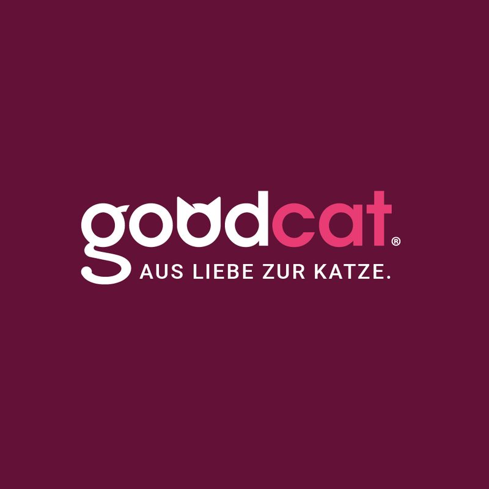
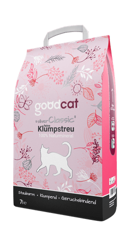
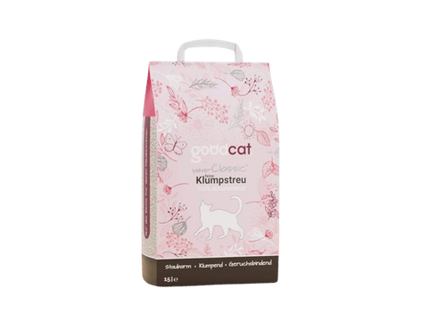
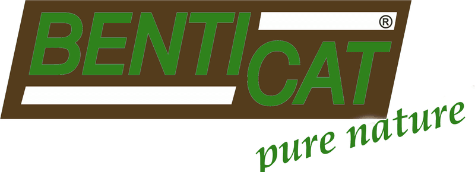
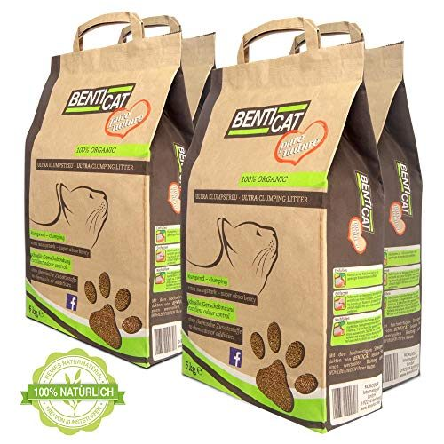
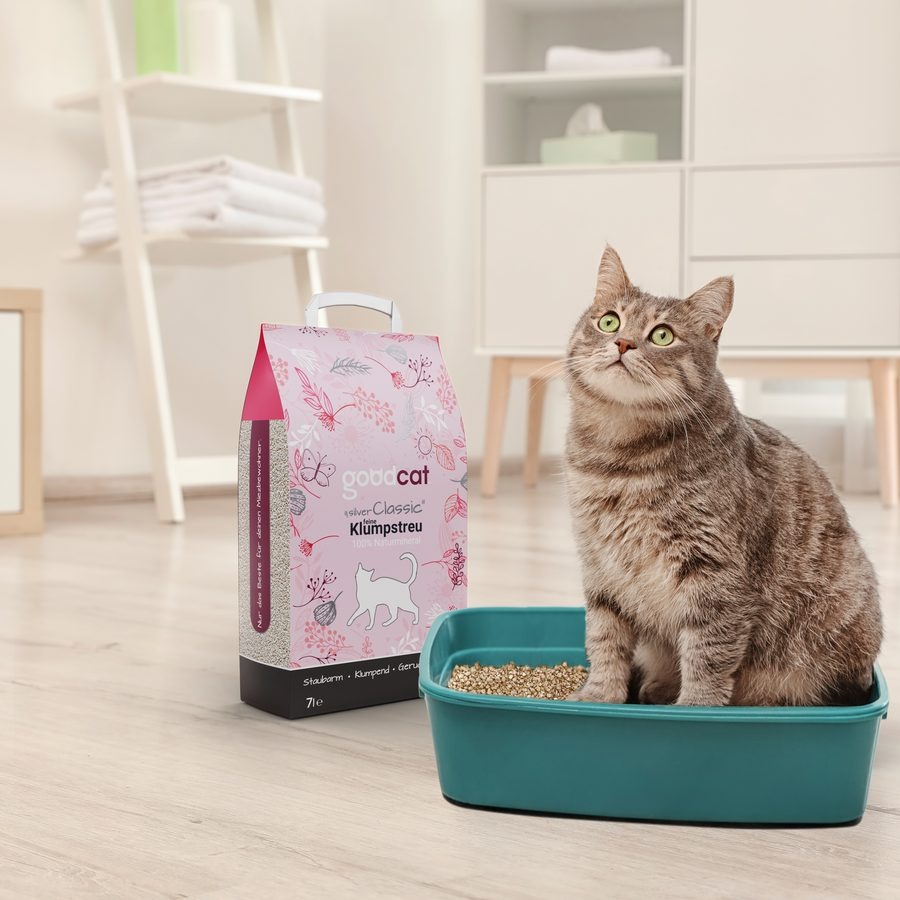
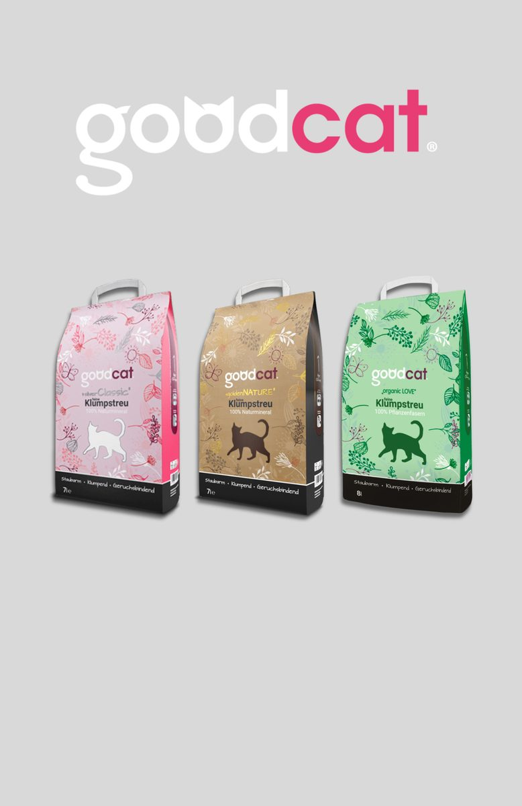

Happy Pets – Happy People
Seit 1992 produzieren und vertreiben wir Bentonit-Katzenstreu für europäische Abnehmer: Lebensmitteleinzelhandel, Fachhandel und Private-Label-Partner. Zwei eigene Marken, eine Produktion, ein Qualitätsanspruch.
Produziert nach ISO 9001:2015, ISO 14001:2015 und BRC Global Standard. Unabhängige Qualitätskontrolle nach DIN EN ISO/IEC 17025 (Analysezentrum Dorfner). Alle Produkte sind reine Naturprodukte.
Zwei Marken, zwei Positionierungen: goodcat für den klassischen Handel, Benticat als Naturmarke. Beide aus eigener Produktion in Deutschland.

Aus Liebe zur Katze.
Klumpende Bentonit-Hygienestreu in Premium- und Standard-Qualitäten: staubarm, klumpend, geruchsbindend. Im Handel und auf goodcat.de.



Pure Nature
Positionierungstext Benticat: Sortiment, Qualitäten, Gebindegrößen und USPs — Zulieferung Produktdaten ausstehend.

Bentonit ist eine natürliche Tonerde mit außergewöhnlicher Saugkraft — die Basis klumpender Katzenstreu. Ausführlicher Text von der Alt-Site-Seite „Was ist Bentonit?" übernehmen (im Scrape vorhanden) — Herkunft, Abbau, Eigenschaften, Nachhaltigkeit.
Wir produzieren Bentonit-Katzenstreu auch als Private Label für Handelsmarken: Premium-Qualitäten in flexiblen Gebindegrößen, eigene Rezepturen, kurze Wege ab Werk. Sprechen Sie uns an.
Private-Label-Anfrage senden
KORODUR Katzenstreu auf den führenden Branchenmessen: Interzoo Nürnberg und PLMA Amsterdam. Kommende Termine bzw. Rückblick-Formulierung — siehe Diskussionspunkt 4.
